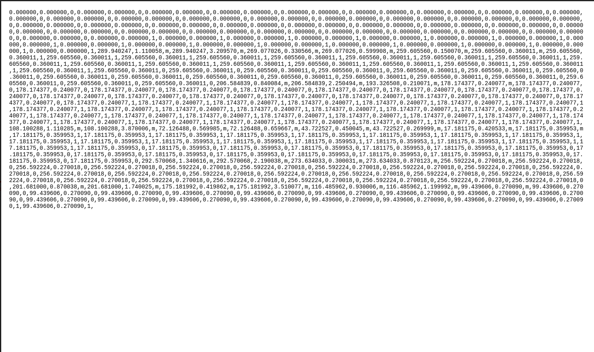
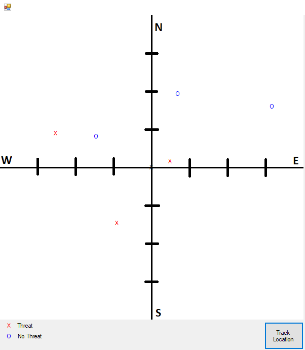

When initially thinking about the project we wanted to give it a uniqueness that gave it functionality. So we thought why not have it map and tag our environment based on the path it has traveled and what it has encountered along the way. There were some pre-existing models, but they weren't too helpful in our implementation. It was decided to leverage the SD File System to store our information for mapping our path. Essentially as the robot moves through the environment it keeps track of the heading and the amount of time it spent moving forwards and turning. Each of these are multiplied by a speed ratio determined by averaging the times for a series of trials for driving forward and turning 180 degrees in each direction.
Implementation was a little tricky since we took away the encoders. These in fact were more trouble than originally anticipated since they did not help with straightening the motion of the wheels. Each time a movement occurs a timer is started on the immeadiate button press, and then it is stop on the button release. This time is then stored and multiplied by the movement rates determined by the averages, which is then used to calculate the new heading of the robot.
Well we discussed how the objects were labeled in the environment using the google vision api, but there is an additional modification that was made to the code. When communicating from the Raspberry Pi (RPi) to the mbed it awaits an initial indicator character from the mbed that tells the RPi that it ready to engage the tagging. This character is sent once the '4' button has been pressed on the bluetooth GUI. Once the character is received then the label requester continues to analyze the picture taken by the camera and spits back the responses. The targets we used for the project were green army men, thus the responses are then parsed and if any of the keywords (military organization, army men, green, gun, or soldier) are found then it prints to the terminal window that a threat has been found. This sends back a character to the mBed to notify that the object has been tagged and the robot plays "Target Acquired" over the Speaker to provide further confirmation. However, if it is in fact not an army man then it sends back a different character, which prompts the Robot to play "Weeee" over the speaker.
The SD Fie System comes in on the back end as well, along with the heading and time that was written on the SD card it also either gets a m or 1 to demonstrate that an object was tagged in that location. An example image of the text file is included below.

This information is processed by the C# GUI code in order to create the plot with the locations of where the robot tried to tag things and where it was successful in tagging. An example of the finished product after the file was processed is shown below. There are many internal functions that catch for when the robot hasn't changed location or when it has and it has tagged something, but these can all be found in our Github repository.
